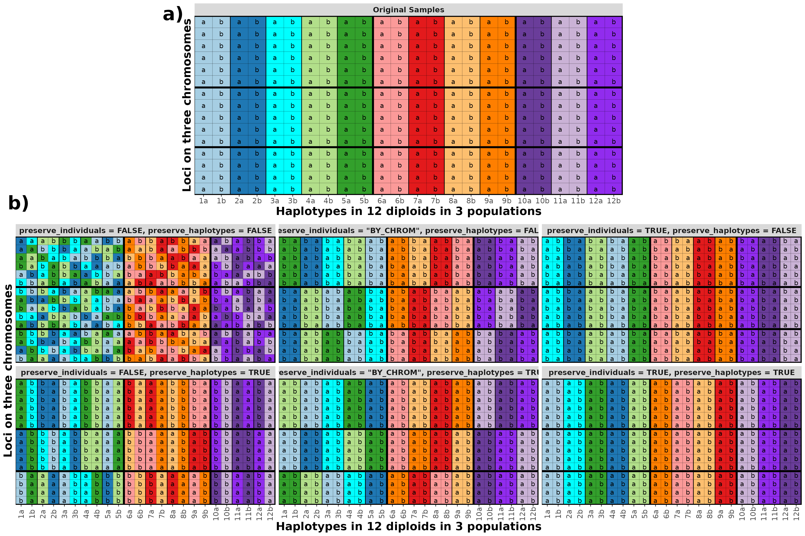

vignettes/permutation-options.Rmd
permutation-options.RmdWhen using the function segments2markers() there are two
options that control the type of permutation of genetic data that is
done:
preserve_individuals, which can take values of
FALSE, "BY_CHROM" or TRUE,
andpreserve_haplotypes, which takes the values of
FALSE or TRUE.The different values of these options can be applied together to yield \(3 \times 2 = 6\) different permutation patterns as displayed in the figure below.
Genetic material is always permuted only among members of the same population.
Need to say more, but the result of different options is pretty clear.
You should only use preserve_haplotypes = TRUE if the
data are phased.
